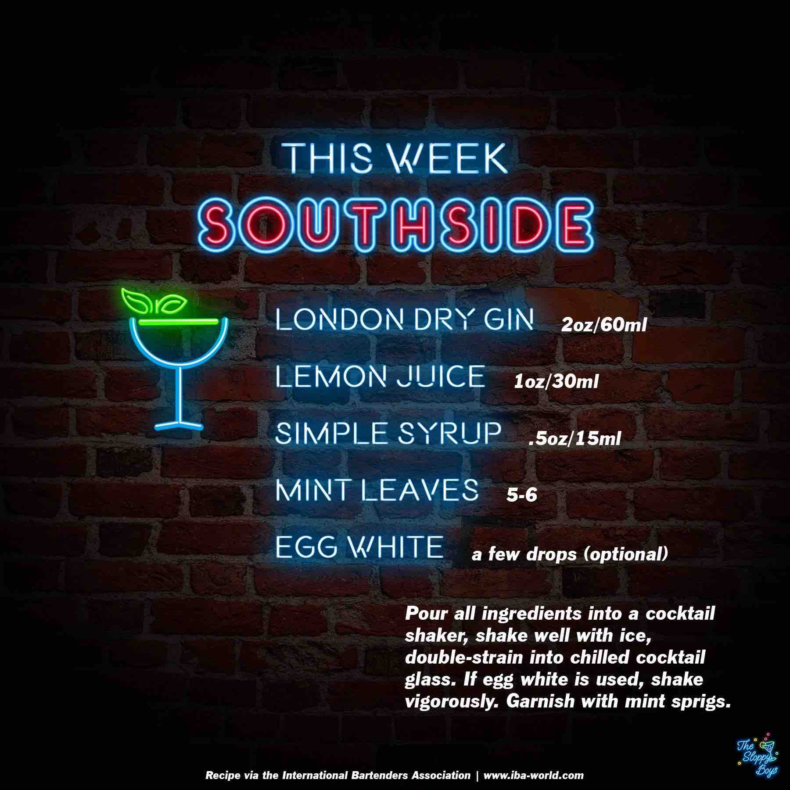

Southside
Ingredients
- London Dry Gin (2oz/60ml)
- Lemon Juice (1oz/30ml)
- Simple Syrup (.5oz/15ml)
- Mint Leaves (5-6)
- Egg White (a few drops (optional))
Steps
- Pour all ingredients into a cocktail shaker, shake well with ice, double-strain into a chilled cocktail glass.
- If egg white is used, shake vigorously.
- Garnish with mint sprigs.
Notes